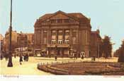

|
|
|
alte Marktansicht
Blick vom Dom
Luftaufnahme
Magdeburger Dom
Magdeburger Dom
 Magdeburg
Magdeburger Dom
Eulenspiegelbrunnen
|
805 Im Diedenhofer Kapitular Karl des Großen findet Magdeburg seine erste Erwähnung. Die Lage des Ortes am Schnittpunkt von Fernhandelsstraßen mit dem Wasserweg Elbe begünstigt das Entstehen einer Siedlung. Diese Siedlung wird durch ein Kastell gesichert. 955 Im Zusammenhang mit dem lang gehegten Ziel Ottos, Magdeburg zum Erzbistum zu erheben, beginnt der Ausbau der Kirche des Moritzklosters zur Kathedrale. Damit entsteht der ottonische Dom. 962 Otto wird in Rom zum ersten deutschen Kaiser gekrönt. 968 Nachdem die Synode von Ravenna 967 die Erhebung Magdeburgs zum Erzbistum beschlossen hatte, wird Weihnachten der erste Erzbischof von Magdeburg, Adalbert, feierlich in sein Amt eingeführt. Die Bistümer Brandenburg, Havelberg, Meißen, Zeitz und Merseburg sind dem Erzbistum unterstellt. Um 1240 Der Magdeburger Reiter auf dem Alten Markt entsteht. Das Kunstwerk ist das einzige vollplastische Reiterstandbild des hohen Mittelalters in Europa. Ende 13. Jhd. Magdeburg wird Mitglied der Hanse 1497 Martin Luther ist Schüler in Magdeburg 1531 Magdeburg tritt dem Schmalkaldischen Bund bei, einen Zusammenschluss von Fürsten, die die Reformation gegen den 1526 gebildeten Dessauer Bund verteidigt. Der Dessauer Bund ist eine Vereinigung altgläubiger Fürsten, zu deren Mitinitiator der Magdeburger Erzbischof Albrecht gehörte. 1547 Über Magdeburg wird die Reichsacht verhängt, da es sich dem Kaiser nicht unterwerfen will. Die Stadt gilt als Hort des Protestantismus.
1548 Auf dem Augsburger
Reichstag wird das Interim verkündet. Allein Magdeburg widersetzt sich dem
Versuch, den Katholizismus als einziges Glaubensbekenntnis anzuerkennen.
Magdeburg wird zum Zentrum des Widerstandes gegen das Interim. Viele
Anhänger der Reformation suchen hier Zuflucht, darunter Flacius Illyrius,
ein führender Vertreter der Bewegung des Interim. Auch Erasmus Alberus
trifft in Magdeburg ein. Zahlreiche Flugschriften werden gedruckt und
Magdeburg erhält seinen Namen als "Unseres Herrgotts Kanzlei". 1562 Kaiser Ferdinand I. spricht Magdeburg von der Reichsacht los. 1639 Magdeburg hat noch 450 Einwohner. Vor dem Dreißigjährigen Krieg waren es noch etwa 30.000 Einwohner. 1757 Preußen befindet sich im Krieg mit Österreich und anderen Staaten. König Friedrich II. ordnet an, dass die königliche Familie in Magdeburg im mittlerweile erbauten Stadtschloss einquartiert wird. Magdeburg ist inzwischen eine der sichersten und größten preußischen Festungen. 1807 Magdeburg wird dem Königreich Westfalen einverleibt und zur Hauptstadt des Elbdepartements bestimmt.
1815 Magdeburg wird
Hauptstadt der preußischen Provinz Sachsen, die sich aus den
Regierungsbezirken Magdeburg, Merseburg und Erfurt zusammensetzt. 1818 In Magdeburg leben 35.824 Einwohner. Jeder Siebente ist ein Soldat. 1834 – 36 Richard Wagner wirkt als Kapellmeister in Magdeburg und lernt hier seine erste Frau, Minna Planer, kennen. 1873/74 Der Zentralbahnhof entsteht. 1912 Die Festung Magdeburg wird offiziell aufgelöst. 1945 Bei den schwersten Bombenangriffen auf Magdeburg am 16. Januar verlieren Tausende ihr Leben. Die Altstadt wird zu 90 Prozent zerstört. Der Zerstörungsgrad der Stadt beträgt 60 Prozent.
Mit insgesamt sechs Millionen
Kubikmetern Trümmer steht Magdeburg mit zwanzig Kubikmetern pro Einwohner
am Ende des Krieges hinter Dresden und Köln an dritter Stelle der schwer
zerstörten Städte in Deutschland. Lebten am Vorabend des Krieges in
Magdeburg noch etwa 330.000 Menschen, so waren es im April 1945 nur noch
90.000. 1947 Durch den SMAD-Befehl Nr. 180 vom 21. Juli 1947 wird die Provinz Sachsen-Anhalt in Land Sachsen-Anhalt umbenannt. 1952 Das Land Sachsen-Anhalt wird aufgelöst. Vorwiegend auf seinem Territorium entstehen die Bezirke Magdeburg und Halle. 1970 Auf dem Alten Markt wird der Brunnen Till Eulenspiegel von Heinrich Apel aufgestellt. 1974 Der Verkehr auf dem Magdeburger Ring wird bis zur Halberstädter Straße freigegeben. 1990 Magdeburg wird Hauptstadt des Landes Sachsen-Anhalt und Mitglied des Deutschen Städtetages. 2002
Otto-von-Guericke Jahr
|